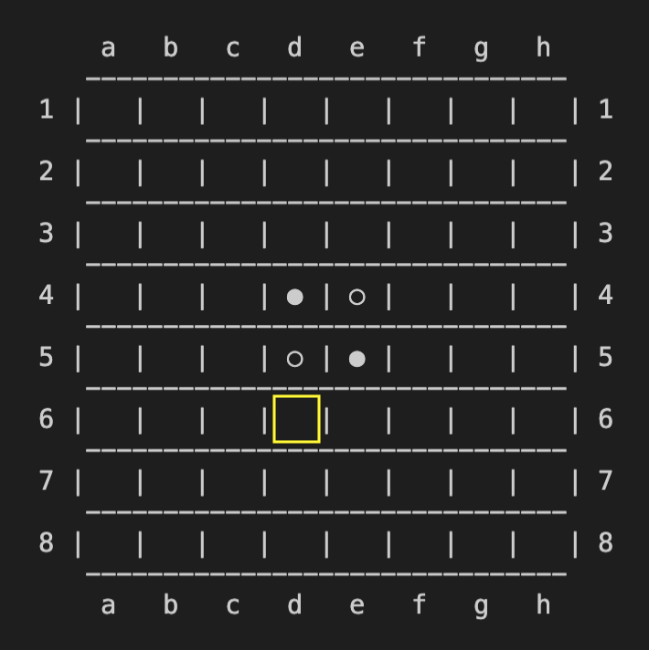

Stage 5 石を裏返す機能を実装する
5-2 石を裏返す機能を実装する
とりあえずコードを見ていただきましょうか。
def turn(self, player, row, col, logger=None):
logger = logger or local_logger
# out of the board
if not (InBoard(row) and InBoard(col)):
logger.info('OUT OF THE BOARD')
return FAILED
# there is already a piece
if self.board[row][col] != EMPTY:
logger.info('THERE IS ALREADY A PIECE')
return FAILED
turned = False
# searching all the direction for available one
for direction in WHOLE_DIRECTION:
focused = [row + direction[ROW], col + direction[COL]]
if not (InBoard(focused[ROW]) and InBoard(focused[COL])):
continue
next_piece = self.board[focused[ROW]][focused[COL]]
logger.debug('direc = {}, next_piece = {}'.format(direction, next_piece))
# in case available
if next_piece == -player and self.turnjudge(player, focused[ROW], focused[COL], direction):
while self.board[focused[ROW]][focused[COL]] == -player:
self.board[focused[ROW]][focused[COL]] = player
focused[ROW] += direction[ROW]
focused[COL] += direction[COL]
turned = True
# in case a piece was turned
if turned:
self.board[row][col] = player
return SUCCEEDED
# in case any piece was not turned
else:
logger.info('THERE IS NO DIRECTION AVAILABLE')
return FAILED

もうなんかコード長くても驚かなくなったわ
いい兆候です。やっとプログラミングに慣れてきましたね。
~~~~~~~~~~~~~~~
まずは引数から見ていきましょう。とは言っても turnjudge とほとんど変わらないんですが。
| player | 石をおいたプレーヤー番号 |
| row | 石をおいたマスの row 番号 |
| col | 石をおいたマスの column 番号 |
| logger | ロガー |
ほんと見たような表やな
そりゃそうですよ、これ 4-2 の表のコピペみたいなもんですから。
引数入れたらいつも通りロガーを設定してあげてください。
def turn(self, player, row, col, logger=None):
logger = logger or local_logger
ほんと説明手抜くよなお前
だって前やってますから。
~~~~~~~~~~~~~~~
turnjudge で石を裏返せるか確認する前に、そんなの確認しなくても石をおけない場合を除外しましょう。指定のマス [row, col] が盤面外に出ている場合と、すでにそこに石が置かれている場合ですね。
# out of the board
if not (InBoard(row) and InBoard(col)):
logger.info('OUT OF THE BOARD')
return FAILED
# there is already a piece
if self.board[row][col] != EMPTY:
logger.info('THERE IS ALREADY A PIECE')
return FAILED
InBoard 関数は row か col かどちらかでも False を出したらアウトですから、「両方大丈夫な場合」以外は「石を置けない」FAILED をリターンします。
~~~~~~~~~~~~~~~
さて、ここからは turnjudge をしっかり使っていきますよ。
とりあえず turned = False と書いている部分は無視していただいて結構ですので、for ループの中身を見ていきましょう。
turned = False
# searching all the direction for available one
for direction in WHOLE_DIRECTION:
focused = [row + direction[ROW], col + direction[COL]]
if not (InBoard(focused[ROW]) and InBoard(focused[COL])):
continue
next_piece = self.board[focused[ROW]][focused[COL]]
logger.debug('direc = {}, next_piece = {}'.format(direction, next_piece))
# in case available
if next_piece == -player and self.turnjudge(player, focused[ROW], focused[COL], direction):
while self.board[focused[ROW]][focused[COL]] == -player:
self.board[focused[ROW]][focused[COL]] = player
focused[ROW] += direction[ROW]
focused[COL] += direction[COL]
turned = True
for ループで direction に全方向を入れてそれぞれループの中を巡らせます。
まずは focused というマスを決めてあげます。「[row, col] の隣のマス」という意味です。
turned = False
# searching all the direction for available one
for direction in WHOLE_DIRECTION:
focused = [row + direction[ROW], col + direction[COL]]
この focused というマスを色々と弄るのですが、そもそも盤面外にあったらいじることができませんから、focused が盤面外の場合は再び方向選択させますので continue します。
focused = [row + direction[ROW], col + direction[COL]]
if not (InBoard(focused[ROW]) and InBoard(focused[COL])):
continue
next_piece = self.board[focused[ROW]][focused[COL]]
focused にある石を next_piece という変数に格納します。
if not (InBoard(focused[ROW]) and InBoard(focused[COL])):
continue
next_piece = self.board[focused[ROW]][focused[COL]]
logger.debug('direc = {}, next_piece = {}'.format(direction, next_piece))
# in case available
裏返せるならこれは -player になっているはずです。とりあえずログをとっておきましょう。
~~~~~~~~~~~~~~~
さて、本格的に石を裏返します。石を裏返せる条件は
- next_piece が -player である
- turnjudge が True である
ですよね。
logger.debug('direc = {}, next_piece = {}'.format(direction, next_piece))
# in case available
if next_piece == -player and self.turnjudge(player, focused[ROW], focused[COL], direction):
while self.board[focused[ROW]][focused[COL]] == -player:
両方ともクリアしていれば次のステップに入りましょう。focused のマスにある石を裏返します。
でも focused って [row, col] の隣のマスやろ
ええ、ですから裏返すたびに focused を動かしていきます。
if next_piece == -player and self.turnjudge(player, focused[ROW], focused[COL], direction):
while self.board[focused[ROW]][focused[COL]] == -player:
self.board[focused[ROW]][focused[COL]] = player
focused[ROW] += direction[ROW]
focused[COL] += direction[COL]
turned = True
focused にあるのが相手の石なら自分の石にする、そして focused の位置を direction の方向にずらすと言うことを、自分の石にたどり着くまでやります。
最後の turned ってなんやねん
それについては今からご説明しましょう。
~~~~~~~~~~~~~~~
さて、ここまでコーディングしてきましたけれども、実際に「石を裏返した」ということをどうやって判別しましょうか？
それって調べないといけねーんか。
ええ、例えばこういう場合を考えてみてください。
黒がこの状態で d6 に石を置こうとしたとしましょう。

待て待て待て、おめーそこに石おけねーよ
ええ、そうですよね。ではそれどうやってそこに「置けない」ことを判別します？
いや、判別って turnjudge でいいじゃねえか
でも turn の中で turnjudge をちゃんと使ってますから、「置けるか置けないか」を判断するメソッドを別に作ったら二度手間ですよね。
まあ、そうなるな
turn の中では実際に石を裏返してるんですから、「マジで石を裏返したら turned を True にする」みたいな変数ほしくないですか？
さっきの turned ってそう言うことだったのね
ええ、つまり
| turned == True | 裏返した |
| turned == False | 裏返していない |
という判別が効きますので、turned が True なら裏返し成功、False なら失敗としてリターンすることができます。
# in case a piece was turned
if turned:
self.board[row][col] = player
return SUCCEEDED
# in case any piece was not turned
else:
logger.info('THERE IS NO DIRECTION AVAILABLE')
return FAILED
これで石を裏返す機能は全て揃いました。あとはゲームを進めるだけです。